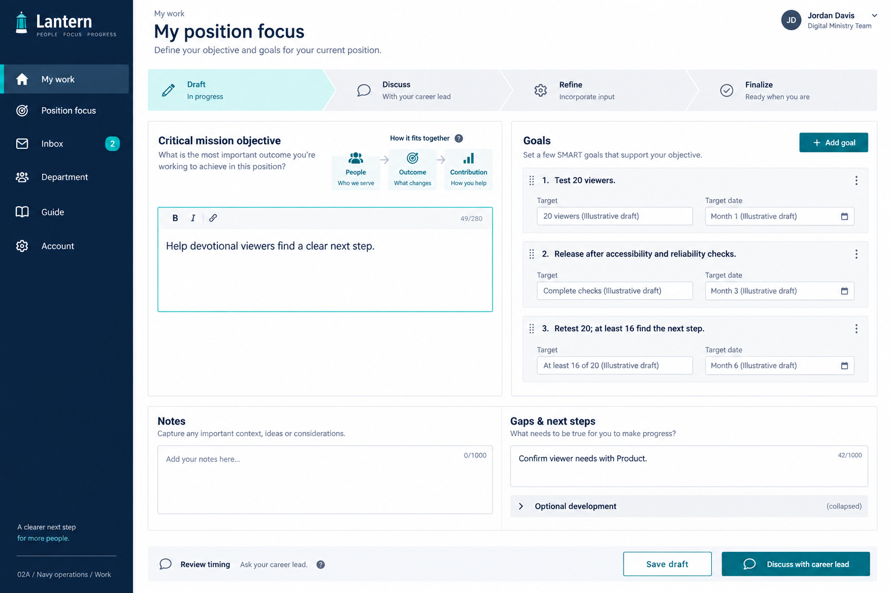
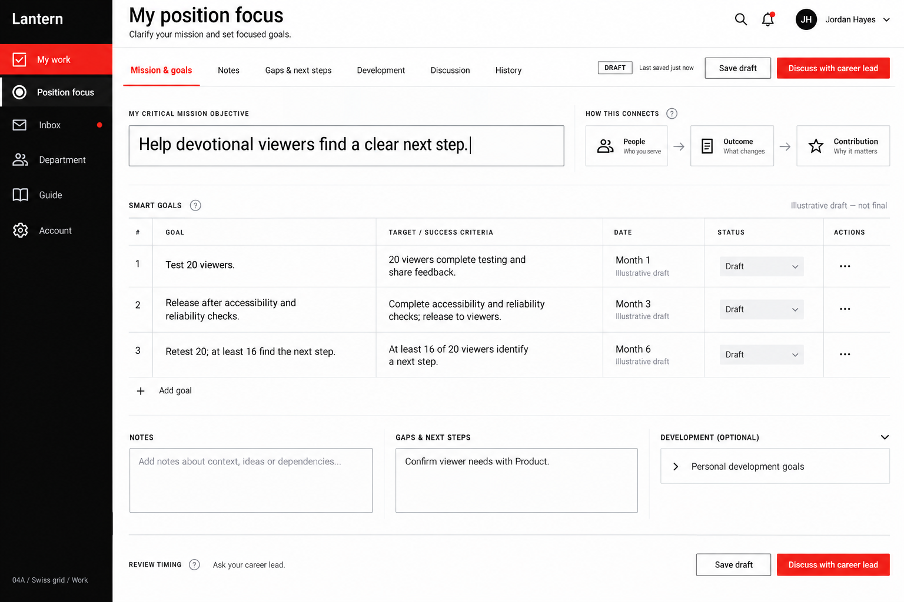
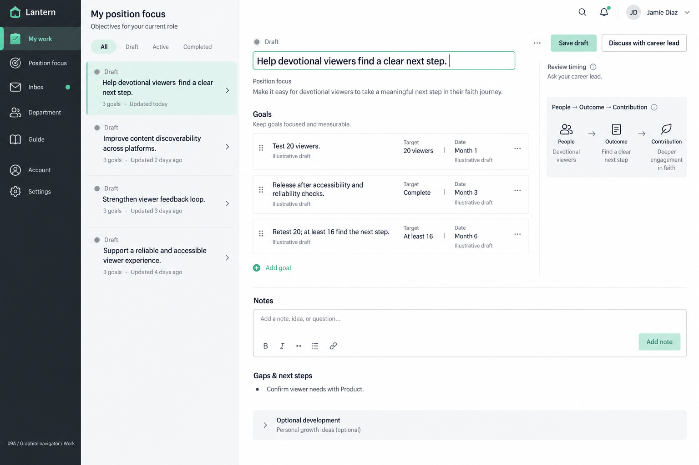

02 · Navy operations
Clear sidebar navigation, two-pane editing and a guided discussion flow. Teal accents on a white workspace.
View original guide concept ↗Explore the same core tasks in the original layouts, the focused base, and three refinements of its reading layout. Choose a direction below, then use the bottom switcher to compare it with the others.

Clear sidebar navigation, two-pane editing and a guided discussion flow. Teal accents on a white workspace.
View original guide concept ↗
Compact tables, horizontal work tabs and strong alignment. Black and white with red action accents.
View original guide concept ↗
Navigation, item list and detail pane. Select a focus, message or person without losing your place.
View original guide concept ↗A dated document list, a spacious empty editor and a separate guide. A minimal starting point for incremental design.
Refined side-by-side objectives and goals, with clearer hierarchy and quieter controls.
Objectives above their goals, with comfortable reading width and compact goal rows.
Aligned columns and consistent action placement for scanning the whole document.
Choose normal, personal development or leadership inside the Add Objective dialog.
Suggested route: edit a goal → save a draft → add a note → discuss the focus → open an inbox item → browse the department → read the example → edit account settings.